Meridius: the endless horde
Status, 21 October 2026: battles, facing, maps and the campaign have been reworked around an endless horde of orcs and goblins. Every fight is outnumbered. Small battles are glimpses of the host, with a war horn or a second band coming. The campaign ends in a night-long last stand at Brannsted that lasts until dawn, in waves; at sunrise the Margrave's riders charge down the horde's own road into its rear. Facing now comes only from the last step of a move, and the game shows it before you commit. Units are still the drawn figures, as you decided; the new walls, gates, stakes and farm clutter are Blender renders. Not yet accepted by you.
What it looks like
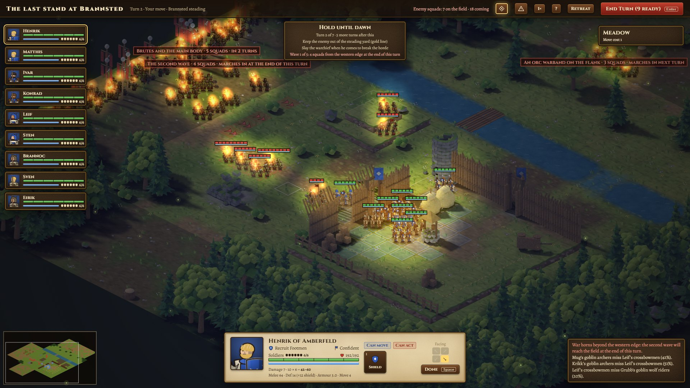
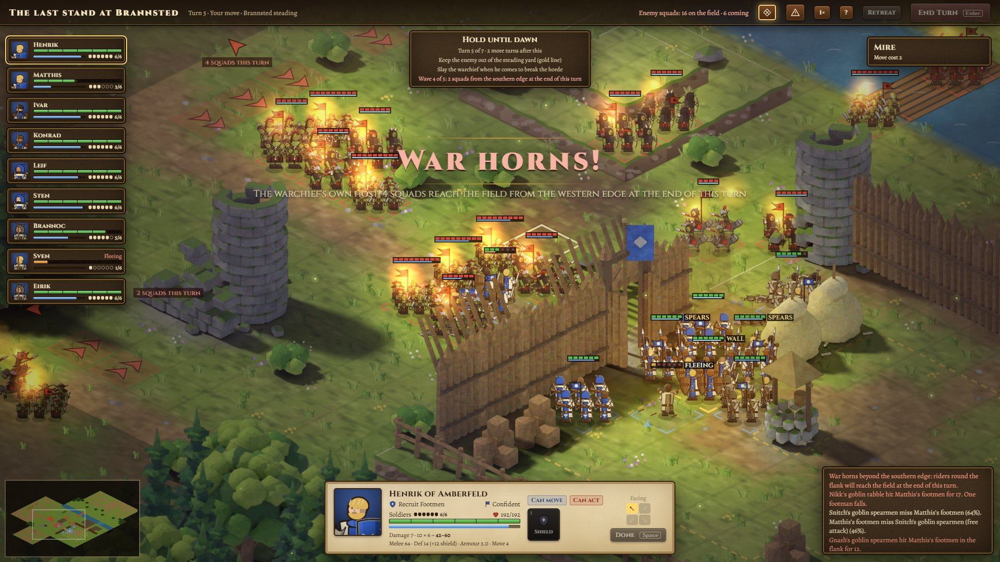

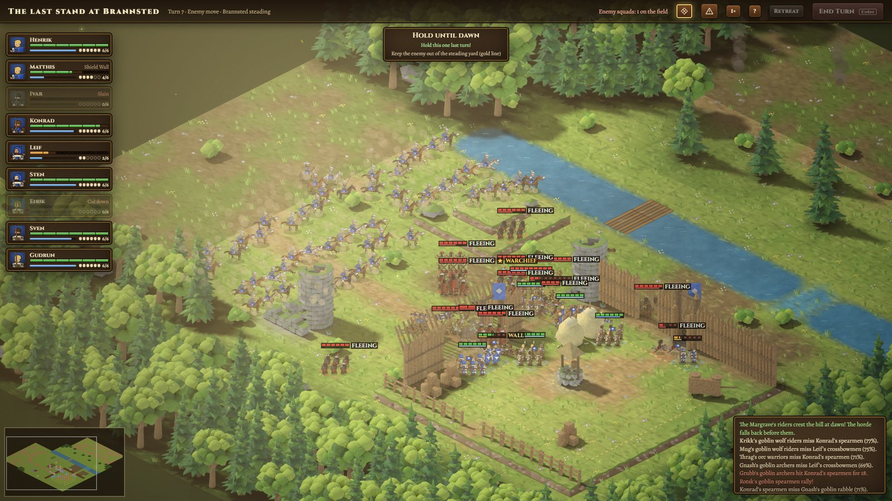
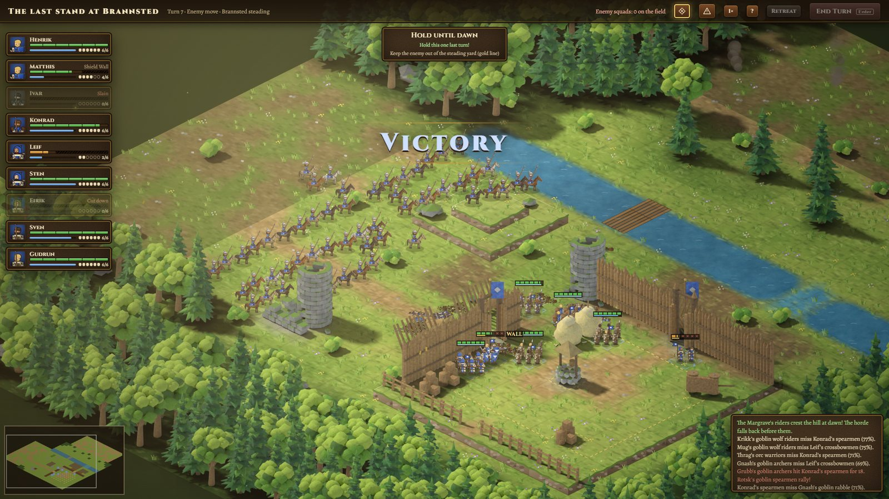
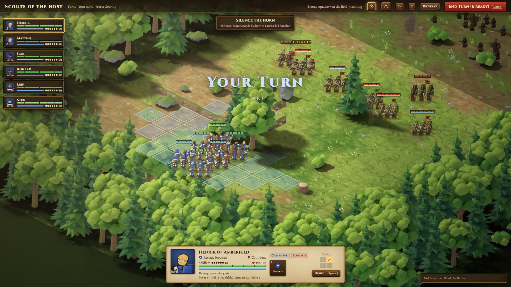
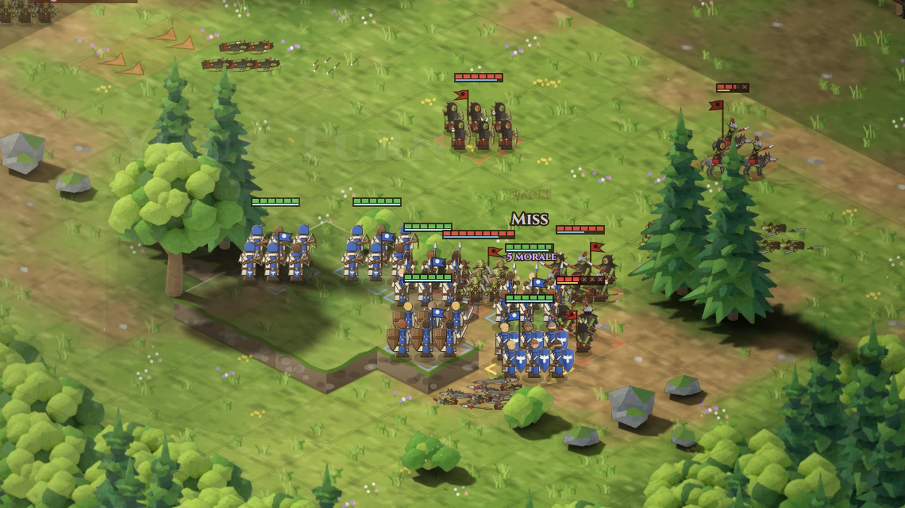
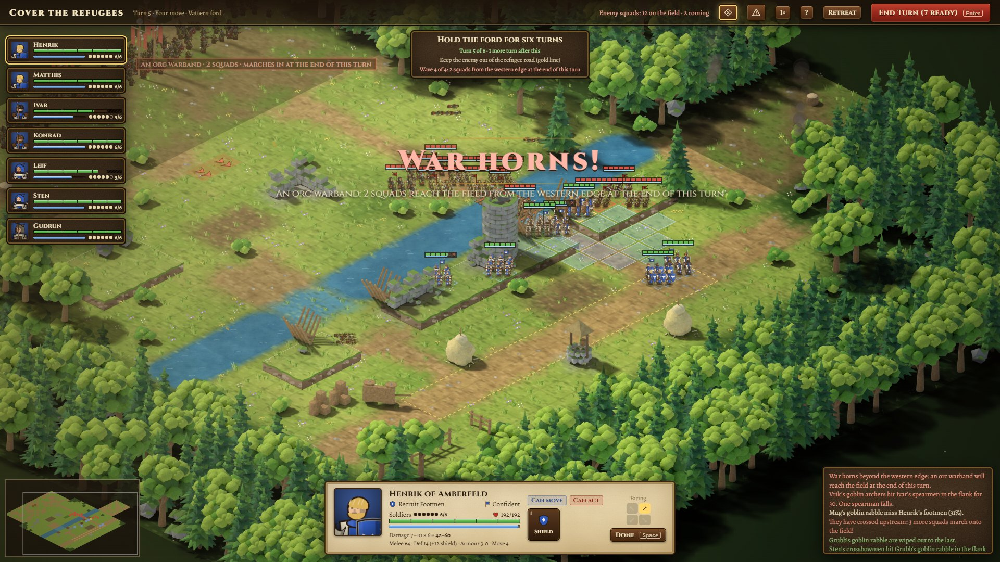
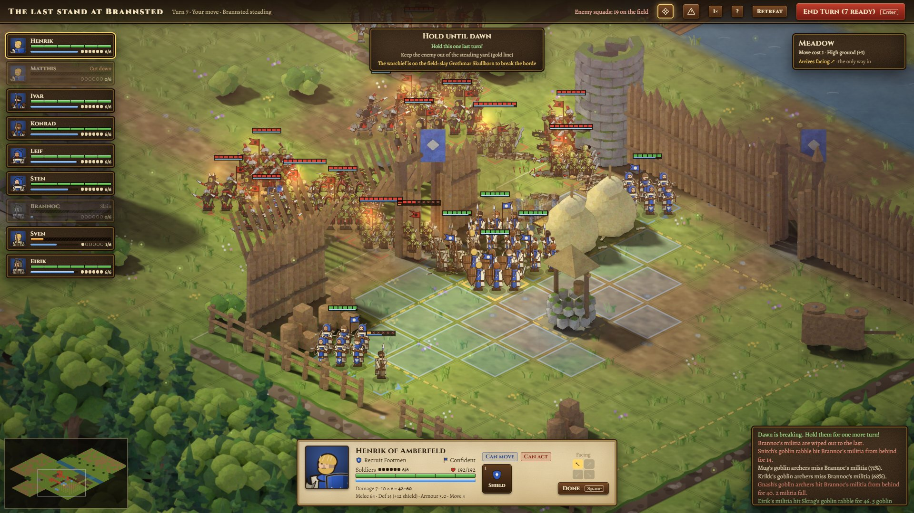
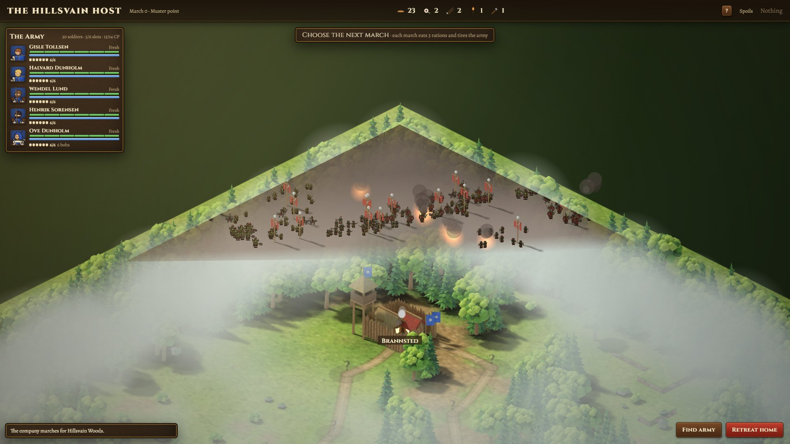
Facing comes from movement
- A squad faces the way it took its last step. Attacking and reactions (spearwall, overwatch) no longer turn it. The facing buttons are gone.
- While you choose a destination you see the path, a ghost of the squad at the destination and a gold arrow for its facing. Point at an edge of the tile to arrive facing that edge, or press Q / E; faint arrows mark the other sides you can reach. Without a choice, the squad arrives facing the nearest enemy if any path allows. It never takes a path with more free attacks than the safest one.
- To turn without moving, point at an edge of the squad's own tile: it steps out and back, which uses its move. The squad fades while you aim, so its ghost and the arrow show through.
- Walls and trees in front of the destination fade, and the chosen arrow is drawn above everything, health bars included, a little larger when zoomed out. A play-test on the last-stand map showed the palisade hiding the arrow at a gateway; this fixes it.
- Squads keep their shield on the left arm in all four directions, as in your two reference images. Mirrored views use new shield-leading poses instead of making the soldiers left-handed.
- Rules that read facing: flank (+10%) and rear (+20%, +25% damage) attacks, shields and the shield wall, spearwall and overwatch (front and flanks only), first strike (front), and zones of control (no free attack for leaving a squad's rear).
- The enemy follows the same rule and picks its approach path to show you as little flank as it can.
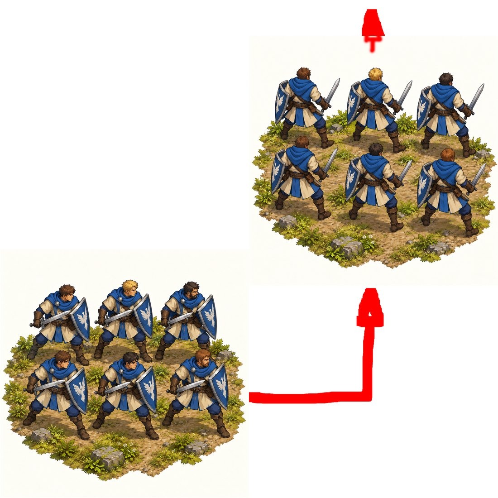
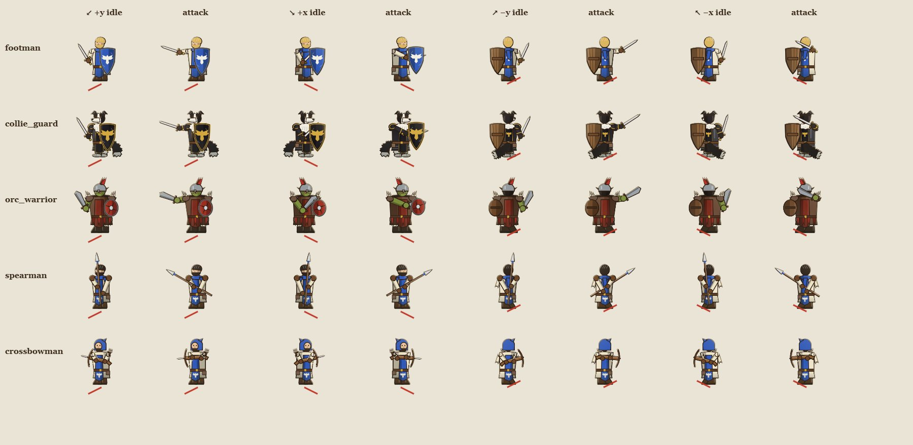
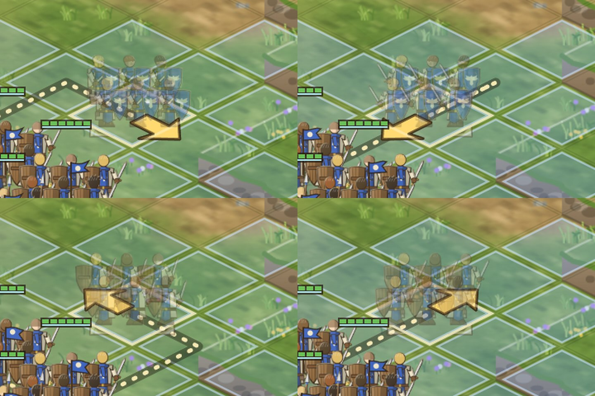
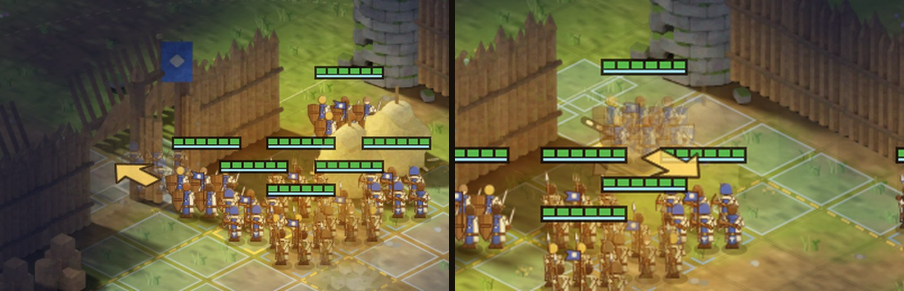
The horde
| Enemy | Squad | Role |
|---|---|---|
| Goblin rabble (new) | 9 | Weak, many. Swarms round flanks and piles onto squads already engaged. |
| Goblin spearmen and archers | 6 | The body of the host. Spears now bite through armour. |
| Goblin wolf riders (new) | 4 | Goblins on great grey wargs. Move 7, slip away without free attacks, +30% damage into flanks and backs, hunt crossbowmen. Set spears stop them. |
| Orc brutes | 6 | Every hit smashes the squad back a tile and the brutes step into the gap. |
| Goblin horn-bearer (new) | 4 | Keeps out of reach and sounds the war horn on his turn unless killed first. If he escapes the field, he sounds it anyway. |
| Orc warchief | 6 | Leads the final wave of the last stand; his fall breaks the whole host. |
| Orc warriors, moss trolls | 6 / 3 | Unchanged; trolls come with the warchief. |
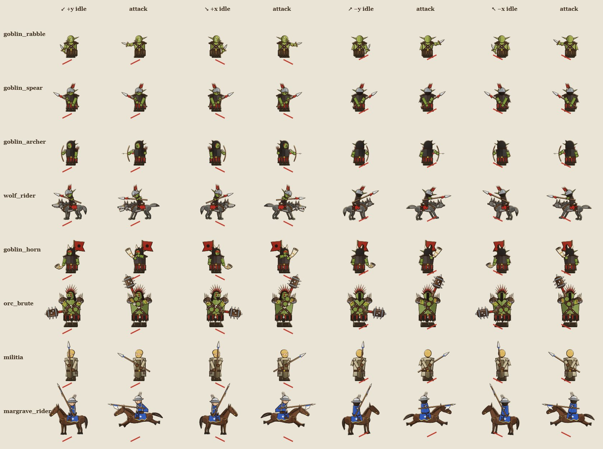
- Waves. Battles carry their reinforcements as data. Coming squads wait beyond their edge, visible and darkened. Red arrows mark where a wave lands at the end of the turn, and the top of the screen gives the next wave's size, edge and turns left. A horn, drums and a roar announce them.
- Swarm AI. Archers loose first, the heavy orcs crash into the front, riders go round, and the swarm floods the gaps they opened. Swarms prefer sides and backs and pile onto beset squads; the horde goes for thinned, shaken squads and militia, and makes for the ground it must take. Horde squads never stand idle beside you.
- Enemy turns play side by side. Thirty squads move as one surge instead of one by one. A crowded enemy turn takes 9–12 seconds at normal speed.
Battles and how they end
| Battle | Field | Win | Lose |
|---|---|---|---|
| Scouts of the host | small | Rout them; kill the horn-bearer before turn 3 or 5–6 more squads come | Company destroyed or routed |
| Stragglers, raiders, wolf riders, vanguard, brutes, trolls, ambush | small | Rout them; a second band or flank wave arrives on turn 3–4 | Company destroyed or routed |
| Cover the refugees (Vattern ford, optional) | large | Hold six turns | The road taken at the end of two enemy turns running, or the company destroyed |
| The last stand at Brannsted (objective) | large | Hold seven turns until dawn, when the Margrave's riders charge in, or slay the warchief | The yard taken at the end of two enemy turns running, or the company destroyed |
Morale and rout apply to both sides. Militia stand with the company in the stands; they can break, and the company has to hold without them. A skirmish that drags past turn 14 ends with the enemy giving up. The last stand starts at night and lightens each turn until the relief arrives at sunrise.
Battlefields
- Brannsted steading (24 × 22): a palisaded farm on a rise, with two gates, a two-tile breach by the corner tower and a gap in the back fence. Stakes channel the north road; a stream with a bridge and a ford covers the west; a hill and a burned farm give the horde cover.
- Vattern ford (24 × 22): a river with one bridge and one ford, a ridge with ruins on the near bank, and the refugee road behind it. Late waves cross upstream and come along the near bank.
- Both are drawn by hand and used as drawn or transposed, so each looks different from battle to battle. Small fields stay generated (14 × 12). Squads deploy into the gateways by default.
- New Blender props: continuous palisade walls, open gateways with blue pennants, stake lines, an overturned cart, haystacks, a well, the horde's war standard, and Brannsted for the campaign map.
- Camera: zooms out until the field fits and never shows past the forest ring. A minimap with click-to-jump sits on large fields, and arrows at the screen edge point to waves that are out of view.
The campaign: The Hillsvain Host
- The host's front creeps toward Brannsted with every march: scorched land, warbands under standards and burning farms on the map. Each expedition opens on it.
- One line of news per march, scout reports that count the host, and four new events: refugees on the road, drums in the night, riders shadowing the column, and a rider from Brannsted.
- An optional stand at the Vattern ford midway, and the last stand at Brannsted as the objective (it replaces the war camp). A depleted company meets a slightly thinner host; the warchief and his monsters always come.
Verification
- 66 automated tests pass. New: facing from movement (11), and the horde (14): waves, the horn, held ground, relief, the warchief, brute smash, wolf riders, the give-up rule, and that every entry reaches the ground to hold on both large maps.
- The facing preview was driven through the real UI on an open field and on the last-stand map at its opening zoom: pointing at each edge and cycling with E picks that facing, a squad moved into a gateway and a squad turned in place both ended facing the way the arrow showed.
- A full seven-turn last stand was played to the dawn and filmed: the riders charge, the host breaks and the victory follows with no errors.
- Two full expeditions were played through the UI with 0 errors and 0 failed requests. Every battle type was captured in the running game.
- Frame rate in a real Edge window (RTX 4070): small field 70 FPS; last stand 61 FPS, 58 zoomed out, 70 with every wave on the field; ford 57. A last stand opens in about 1.2 seconds.
- Enemy turns in the last stand take 4–9 seconds at normal speed, small battles about 6.
Balance (headless, AI on both sides)
| Battle (fresh six-squad company, level 1) | Win | Enemy squads | Soldiers lost |
|---|---|---|---|
| Small battles (8 kinds) | 100% | 6.5–10.5 | 2.5–7 |
| Cover the refugees | 100% | 16 | 4.8 |
| The last stand | 85% (level 2: 95%) | 24.5 | 12.9 |
| Campaign (60 companies × 6) | Success | Withdrew | Defeat | Squads lost | Silver after | Roster |
|---|---|---|---|---|---|---|
| 1 | 48% | 33% | 18% | 1.15 | 219 | 6.8 |
| 2 | 42% | 42% | 17% | 1.00 | 218 | 6.6 |
| 3 | 55% | 27% | 18% | 1.03 | 234 | 6.3 |
| 4 | 43% | 42% | 15% | 1.05 | 228 | 6.2 |
| 5 | 45% | 28% | 27% | 0.68 | 232 | 6.5 |
| 6 | 39% | 37% | 24% | 0.85 | 241 | 6.5 |
The campaign is harder than before the horde (60–79% success then). The company now arrives at Brannsted worn down from earlier fights, and the auto-player withdraws from battles it is losing. A player who holds the gates deliberately should do better than the auto-player. Economy and roster stay stable across six expeditions.
What I took from the references
- They Are Billions: waves announced with a direction and a countdown, and a final swarm with the biggest monsters. Here: a wave counter, edge markers, and the warchief's wave with a troll.
- Into the Breach: arrivals shown a turn ahead on the tiles where they emerge. Here: red arrows on the entry tiles, and the waves visible beyond the edge.
- Battle Brothers: wolf riders circle a static line to reach the archers, orcs rush in, spears and shields hold. Here: wolf riders, brutes, and the spearwall as the answer.
- Helm's Deep: dread before contact, torches in the dark, a breach, and holding until relief at dawn. Here: the night last stand that lightens turn by turn.
- Thermopylae, Rorke's Drift: walls and narrow ground let a few hold many. Here: gates, a breach, stakes, a bridge and a ford.
Open items
- Units are still drawn figures until fal is unlocked.
- The campaign has only one tier; harder tiers could raise the host further.
- Sound is still synthesised: the war horn, the horde's roar and the relief fanfare are placeholders.
Plan, code map and lessons: projects/meridius/docs/plan-horde.md.